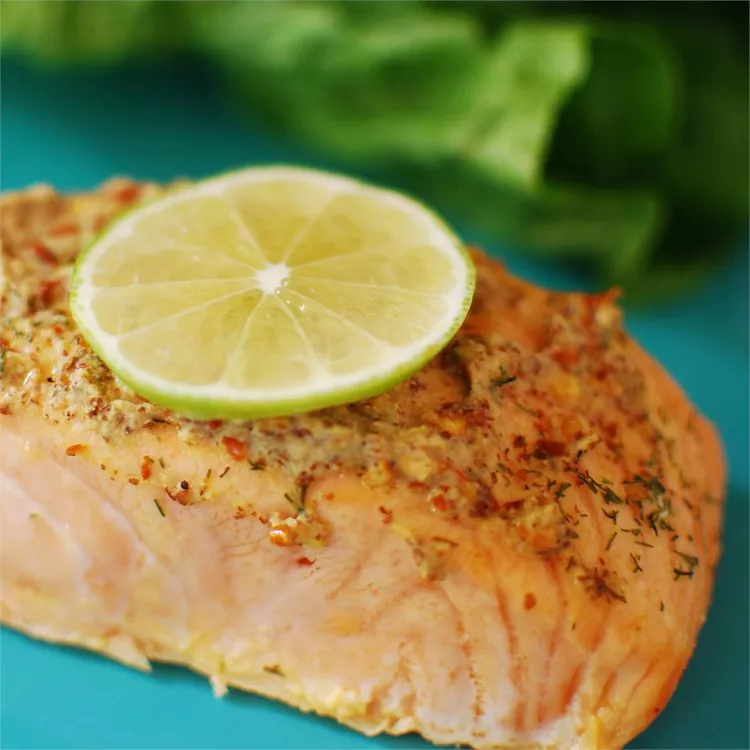

Home
Lasagna
Chorizo Tacos
Spicy Garlic Salmon

Description
An unbelievably tasty and savory meal that can be done in 30 minutes or less!
Ingredients
- 2 cloves garlic, crushed
- 1 dried red chile pepper
- 1 tablespoon olive oil
- 2 tablespoons fresh lime juice
- 1 teaspoon whole-grain mustard
- Sea salt to taste
- Freshly ground black pepper to taste
- 2 (6 ounce) fillets salmon
How to Make
- Preheat the oven to 400 degrees F (200 degrees C). Line a medium baking dish with aluminum foil - lightly grease foil
- Grind garlic, chile pepper, and olive oil together with a mortar and pestle
- Add lime juice, mustard, salt, and black pepper; mix until a thick paste forms
- Place salmon fillets in the prepared baking dish; coat with mustard paste
- Bake in the preheated oven until salmon easily flakes with a fork, 12 to 15 minutes.